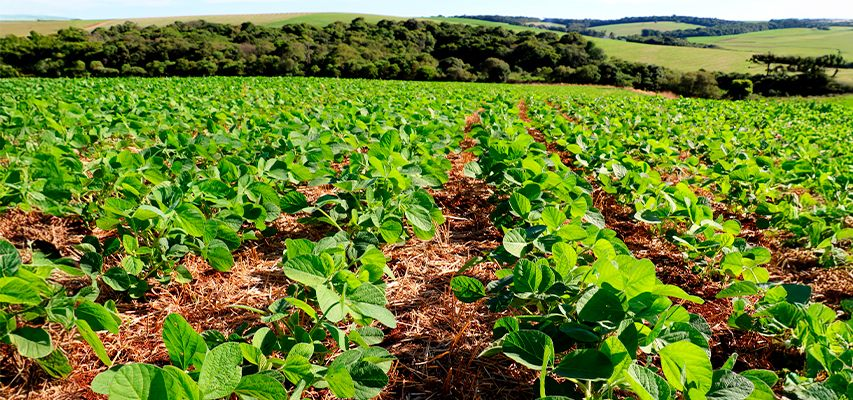

Introdução e fundamentos
Contexto agropecuário, bases da Engenharia Agronômica e a Química como fio condutor das decisões no campo.

Introdução
O Brasil possui forte relevância agropecuária. Por isso, compreender como os processos químicos influenciam o campo é essencial para uma produção eficiente e segura.
A abordagem do seminário é bibliográfica, com linguagem acessível e priorização de portais governamentais e sites educacionais em português.
Engenharia Agronômica: conceito e importância
A atividade do engenheiro agrônomo é ampla e envolve suporte técnico à produção, planejamento, assistência e consultoria, incluindo temas como solos, mecanização, irrigação, ecologia e manejo ambiental.

Há regulamentação do exercício profissional e de atribuições do agrônomo/engenheiro agrônomo, incluindo organização e execução de serviços técnicos e atividades ligadas ao ensino e à experimentação agrícola.
A Química como fio condutor
A Química explica por que um nutriente está (ou não) disponível no solo, por que a calagem altera a fertilidade, como o nitrogênio circula no ambiente e como fertilizantes e defensivos podem gerar benefícios produtivos e riscos ambientais quando mal manejados.